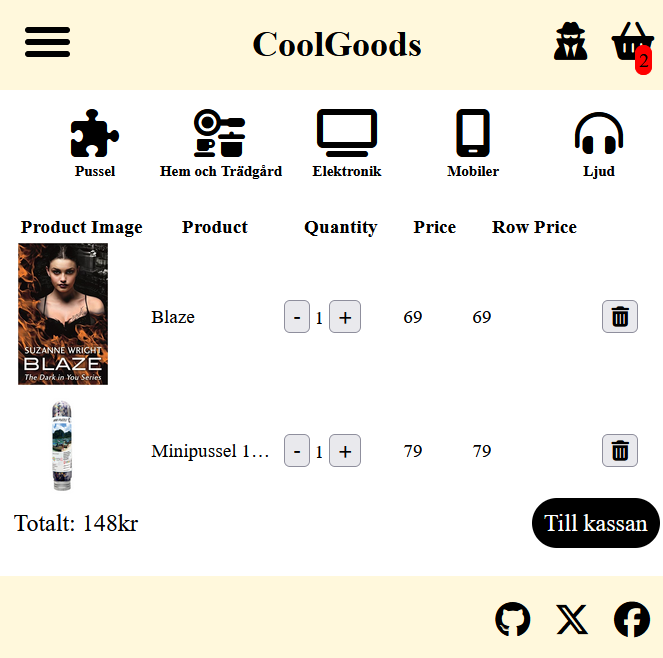

Rebecca Bengtsson
Web Developer | Creative Problem Solver | Team Player
| About Me
My name is Rebecca Bengtsson and I am studying Web Development with a focus on e-commerce at Medieinstitutet.
Previously, I worked at Xerox Sweden AB where I was responsible for production, delivery reliability, and process development within the company.
After many years in a structured and technically oriented environment, I decided to switch career paths to digital development.
Today, I focus on building user-friendly, responsive websites and e-commerce solutions — where structure, quality, and customer experience are central.
I am currently looking for an internship (LIA) on-site from week 40 to 49 in 2025, and possibly also for my second internship from week 4 to 18 in 2026.
I enjoy creating user-friendly, fast websites and am particularly interested in frontend development and e-commerce platforms. Here you will find a selection of my skills, education, and projects.
| Skills
- HTML5
- CSS3
- JavaScript/TypeScript
- React
- PHP
- Github
- Node JS
- Agile/Scrum
- Agile Methodology
- Woocommerce
- MySQL
- Teamwork
| Education
Higher Vocational Education - Web Development with a focus on E-commerce
School: Medieinstitutet, 2024-2026
High School - Media Program
School: Cybergymnasiet Odenplan, 2007-2011
| Work Experience
Xerox Sweden AB - Production & Operator
Period: 2012 - 2024
- Responsible for ensuring deliveries followed set schedules and SLA agreements.
- Coordinated delivery reliability in collaboration with production planning and customer support.
- Participated in incident management and improvement work on routines and work methods.
- Implemented new routines and ensured compliance with processes and regulations.
The experience gained there gave me a strong foundation in structure, responsibility, and problem-solving — qualities I now bring into my work as a web developer.
| Contact Me!
If you want to know more about me, don't hesitate to get in touch!
Email me at: Rebecca.Bengtsson@medieinstitutet.se
Or visit me on: LinkedIn
Phone: +46 73 633 43 13
Find my projects on: Github!
| Projects
Some of the projects I have worked on:
Shoppen - CoolGoods
Homepage!

The menu open!

Inside the shopping cart!
